语言模型是无监督多任务学习器
论文发布日期
作者： Alec Radford、Jeffrey Wu、Rewon Child、David Luan、Dario Amodei、Ilya Sutskever 机构： OpenAI，美国加利福尼亚州旧金山 通讯作者： Alec Radford（alec@openai.com） 说明： Alec Radford 与 Jeffrey Wu 同等贡献；Dario Amodei 与 Ilya Sutskever 同等贡献 发布日期： 2019 年 2 月 14 日
摘要
问答、机器翻译、阅读理解和摘要生成等自然语言处理任务，通常采用任务专用数据集上的监督学习方法。我们证明：当语言模型在一个名为 WebText、包含数百万网页的新数据集上训练时，即使没有任何显式监督，也会开始学习这些任务。当以文档和问题作为条件时，语言模型在 CoQA 数据集上生成的答案达到 55 F1；在没有使用 127,000 多个训练样例的情况下，这一结果达到或超过四个基线系统中的三个。语言模型容量是零样本任务迁移成功的关键；随着容量增加，各项任务的表现以对数线性方式提升。我们最大的模型 GPT-2 是一个拥有 15 亿参数的 Transformer，在零样本设置下，于八个受测语言建模数据集中的七个达到当前最佳结果，但对 WebText 仍然欠拟合。模型样例体现了这些改进，能够生成由连贯段落组成的文本。这些发现表明，构建能够从自然出现的任务示范中学会执行任务的语言处理系统，是一条很有希望的道路。
1. 引言
如今，机器学习系统通过结合大型数据集、高容量模型和监督学习，能够在其训练目标任务上取得优异的平均表现（Krizhevsky 等，2012；Sutskever 等，2014；Amodei 等，2016）。然而，这些系统很脆弱，对数据分布的细微变化（Recht 等，2018）和任务定义的细微变化（Kirkpatrick 等，2017）都很敏感。与其说当前系统是能力全面的通才，不如说它们是狭窄领域中的专家。我们希望迈向更加通用的系统，使其能够完成许多任务，并最终不再需要为每项任务人工创建和标注训练数据集。
构建机器学习系统的主流方法，是收集一组展示目标任务正确行为的训练样例，训练系统模仿这些行为，再用独立同分布的留出样例测试其表现。这种方法很好地推动了狭窄领域专家系统的发展。然而，图像描述模型（Lake 等，2017）、阅读理解系统（Jia 与 Liang，2017）以及图像分类器（Alcorn 等，2018）面对多种多样的可能输入时，经常表现出反常行为，这揭示了该方法的一些不足。
我们怀疑，单一领域数据集上的单任务训练之所以普遍存在，是当前系统缺乏泛化能力的主要原因之一。要使用现有架构构建稳健系统，很可能需要在广泛的领域和任务上训练并衡量性能。近期提出的 GLUE（Wang 等，2018）和 decaNLP（McCann 等，2018）等基准，已经开始研究这一问题。
多任务学习（Caruana，1997）是改进总体性能的一种有希望的框架。然而，自然语言处理中的多任务训练仍处于早期阶段。近期工作仅报告了幅度不大的性能提升（Yogatama 等，2019）；迄今最具雄心的两项尝试，也分别只在 10 个和 17 个“数据集、目标”组合上训练（McCann 等，2018；Bowman 等，2018）。从元学习的角度看，每个“数据集、目标”组合，都是从数据集与目标分布中抽取的一个训练样例。当前机器学习系统需要数百到数千个样例，才能归纳出具有良好泛化能力的函数。这意味着，采用现有方法时，多任务训练可能也需要数量相当的有效训练组合，才能兑现它的潜力。若继续依靠现有技术强行扩展，所需的数据集创建与目标设计规模将极难实现。因此，我们有必要探索执行多任务学习的其他设置。
目前在语言任务上表现最好的系统，结合使用预训练和监督微调。这一方法历史悠久，其发展趋势是采用愈加灵活的迁移形式：最初学习词向量，并把它们作为任务专用架构的输入（Mikolov 等，2013；Collobert 等，2011）；之后迁移循环网络的上下文表示（Dai 与 Le，2015；Peters 等，2018）；近期工作则表明，任务专用架构已不再必需，只需迁移多个自注意力块即可（Radford 等，2018；Devlin 等，2018）。但这些方法仍需要监督训练才能执行任务。当监督数据极少或完全没有时，另一系列研究展示了语言模型执行特定任务的潜力，例如常识推理（Schwartz 等，2017）和情感分析（Radford 等，2017）。
本文把这两条研究路线联系起来，并延续迁移方法日益通用的发展方向。我们证明，语言模型能够在零样本设置下执行下游任务，而无须修改任何参数或架构。通过展示语言模型在零样本设置下执行广泛任务的能力，我们证明了这一方法的潜力。根据具体任务，我们取得了有希望的、有竞争力的乃至当前最佳的结果。
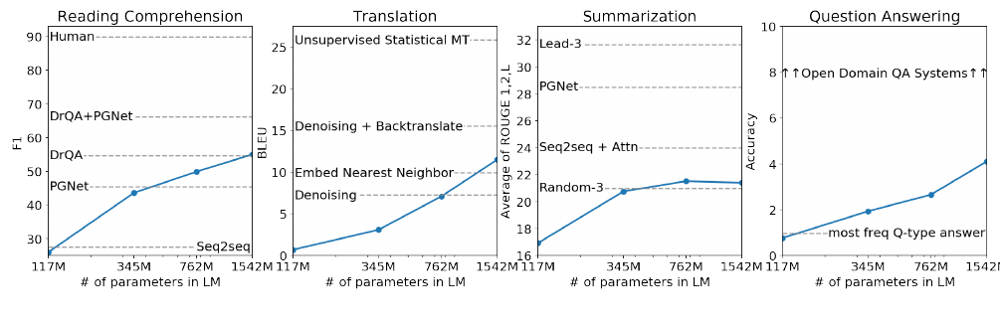
图 1： WebText 语言模型在多项自然语言处理任务上的零样本表现与模型规模之间的关系。阅读理解结果来自 CoQA（Reddy 等，2018），翻译结果来自 WMT-14 法译英（Artetxe 等，2017），摘要生成结果来自 CNN 与 Daily Mail（See 等，2017），问答结果来自 Natural Questions（Kwiatkowski 等，2019）。第 3 节详细说明各项结果。
2. 方法
我们的方法以语言建模为核心。语言建模通常被表述为：根据一组样例 $(x_1,x_2,\ldots,x_n)$ 进行无监督分布估计，其中每个样例都由长度可变的符号序列 $(s_1,s_2,\ldots,s_n)$ 构成。由于语言具有自然的顺序，常见做法是把符号上的联合概率分解为条件概率的乘积（Jelinek 与 Mercer，1980；Bengio 等，2003）：
这种方法使我们能够以可计算的方式从 $p(x)$ 采样并估计它，也能处理 $p(s_{n-k},\ldots,s_n\mid s_1,\ldots,s_{n-k-1})$ 形式的任意条件概率。近年来，能够计算这些条件概率的模型在表达能力上取得了显著进步，例如 Transformer 这样的自注意力架构（Vaswani 等，2017）。
学习执行一项任务，可以在概率框架中表示为估计条件分布 $p(\text{输出}\mid\text{输入})$。通用系统应能对同一个输入执行许多不同任务，因此它不仅要以输入为条件，还要以待执行任务为条件，即应建模 $p(\text{输出}\mid\text{输入},\text{任务})$。这一思想在多任务学习和元学习设置中有多种形式化方式。任务条件通常在架构层面实现，例如 Kaiser 等人（2017）使用任务专用编码器和解码器；也可在算法层面实现，例如 MAML 的内外循环优化框架（Finn 等，2017）。不过，正如 McCann 等人（2018）所示，语言提供了一种灵活方式，可以把任务、输入和输出全部表示为符号序列。例如，一个翻译训练样例可以写成“翻译为法语、英文文本、法文文本”；一个阅读理解训练样例则可以写成“回答问题、文档、问题、答案”。McCann 等人（2018）证明，可以训练单个模型 MQAN，从这种格式的样例中推断并执行许多不同任务。
原则上，语言建模也能学习 McCann 等人（2018）的任务，而不需要显式监督哪些符号属于待预测输出。监督目标与无监督目标相同，只是前者仅在序列的一个子集上计算；因此，无监督目标的全局最小值也是监督目标的全局最小值。在这个略显理想化的设置中，Sutskever 等人（2015）关于密度估计能否作为原则性训练目标的担忧可以被绕开。问题转而变成：实践中能否把无监督目标优化至收敛。初步实验确认，容量足够大的语言模型能够在这种理想化设置中执行多任务学习，但学习速度远慢于显式监督方法。
从上述定义明确的设置跨越到“自然环境中的语言”所具有的混乱状态，是一大步。Weston（2016）在对话语境中主张，需要开发能够直接从自然语言学习的系统；他还给出了概念验证：通过前向预测教师输出，在没有奖励信号时学习问答任务。虽然对话是一种很有吸引力的方法，但我们担心它过于受限。互联网包含大量可被动获取的信息，无须交互式通信。我们的推测是：容量足够大的语言模型，为了更准确地预测自然语言序列，将开始学习推断并执行序列中展示的任务，而不论这些示范是如何获得的。如果语言模型能做到这一点，它实际上就在执行无监督多任务学习。我们通过分析语言模型在多种任务上的零样本表现，检验这一推测是否成立。
2.1 训练数据集
此前大多数工作只在单一文本领域训练语言模型，例如新闻文章（Jozefowicz 等，2016）、维基百科（Merity 等，2016）或小说（Kiros 等，2015）。我们的方法要求构建尽可能庞大且多样的数据集，以便在尽可能多样的领域和语境中，收集自然出现的任务示范。
Common Crawl 之类的网页抓取数据，是多样化且近乎无限文本的一个有希望的来源。这些归档的规模比现有语言建模数据集大许多个数量级，但数据质量存在严重问题。Trinh 与 Le（2018）在常识推理研究中使用 Common Crawl，却指出其中大量文档的“内容基本无法理解”。我们在使用 Common Crawl 的初步实验中也观察到类似问题。Trinh 与 Le（2018）的最佳结果来自 Common Crawl 的一个小型子样本，只包含与目标数据集 Winograd 模式挑战最相似的文档。对于改进特定任务表现，这是一种务实办法；但我们希望避免预先假定系统将执行哪些任务。
因此，我们创建了一份强调文档质量的新网页抓取数据。为此，我们只抓取由人类策展或筛选过的网页。人工筛选完整网页抓取结果成本极高，所以我们从 Reddit 这个社交媒体平台上所有获得至少 3 个 karma 的外链入手。这个条件可以视为一个启发式指标，表明其他用户认为该链接有趣、有教育意义，或者只是好笑。
由此得到的数据集称为 WebText，包含上述 4500 万个链接中的文本子集。为了从 HTML 响应中提取文本，我们组合使用 Dragnet（Peters 与 Lecocq，2013）和 Newspaper1 内容提取器。本文所有结果均使用 WebText 的一个初步版本：它不包含 2017 年 12 月之后创建的链接，经过去重和若干启发式清理后，拥有略多于 800 万篇文档，总计 40 GB 文本。我们从 WebText 中删除了所有维基百科文档，因为维基百科是其他数据集的常见数据源，训练数据与评测任务测试集重叠会使分析复杂化。
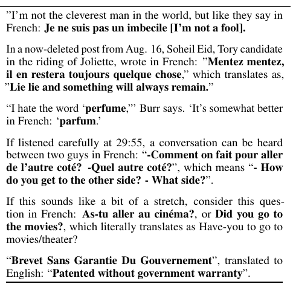
表 1： WebText 训练集各处自然出现的英译法与法译英示范。
2.2 输入表示
通用语言模型应当能够计算任意字符串的概率，也应当能够生成任意字符串。当前大规模语言模型包含小写化、分词和词表外词元等预处理步骤，因而限制了可建模字符串的空间。正如 Gillick 等人（2015）的工作所示，把 Unicode 字符串处理成 UTF-8 字节序列，能够优雅地满足这一要求；但在十亿词基准等大规模数据集上，当前字节级语言模型的表现还无法与词级语言模型竞争（Al-Rfou 等，2018）。我们尝试在 WebText 上训练标准字节级语言模型时，也观察到类似的性能差距。
字节对编码（BPE；Sennrich 等，2015）是字符级与词级语言建模之间的一种实用折中：对于高频符号序列，它采用词级输入；对于低频符号序列，它采用字符级输入，从而有效地在两者之间插值。尽管名称中有“字节”，参考 BPE 实现通常操作 Unicode 码位，而不是字节序列。为了对所有 Unicode 字符串建模，这些实现需要囊括完整的 Unicode 符号空间；在加入任何多符号词元之前，基础词表就会超过 13 万，远大于 BPE 常用的 3.2 万到 6.4 万词元词表，因而代价高得难以承受。相比之下，字节级 BPE 只需包含 256 个基础词元。
然而，直接把 BPE 应用于字节序列会产生次优合并，因为 BPE 使用基于频率的贪心启发式方法构建词元词表。我们观察到，BPE 会收录常用词的许多不同版本，例如 dog、dog.、dog! 和 dog?，因为这些形式频繁出现。这会次优地占用有限的词表槽位和模型容量。为避免这一问题，我们禁止 BPE 跨字符类别合并任意字节序列，但对空格设置例外。这样只会把极少量词拆分成多个词表词元，却能显著提高压缩效率。
这种输入表示使我们能够结合词级语言模型的经验优势与字节级方法的通用性。由于本文方法可以为任意 Unicode 字符串分配概率，因此不论数据集采用什么预处理、分词或词表规模，我们都能在其上评估语言模型。
2.3 模型
我们的语言模型采用基于 Transformer（Vaswani 等，2017）的架构。模型大体沿用 OpenAI GPT（Radford 等，2018）的细节，但作了少量修改。与预激活残差网络（He 等，2016）类似，层归一化（Ba 等，2016）被移到每个子块的输入端；最后一个自注意力块之后还增加了一层归一化。我们采用一种考虑残差路径随模型深度累积效应的改进初始化：初始化时，把残差层权重按 $1/\sqrt{N}$ 缩放，其中 $N$ 是残差层数量。词表扩展至 50,257；上下文长度从 512 增至 1024 个词元；批大小增至 512。
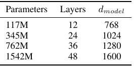
表 2： 四种模型规模的架构超参数。
3. 实验
我们训练并评测了四个规模近似按对数均匀间隔分布的语言模型。其架构汇总于表 2。最小模型与原始 GPT 等价，第二小模型与 BERT 最大模型等价（Devlin 等，2018）。最大的模型拥有比 GPT 多一个数量级以上的参数，我们称其为 GPT-2。每个模型的学习率都在 WebText 的 5% 留出样本上人工调整，以获得最佳困惑度。所有模型仍然欠拟合 WebText；迄今为止，延长训练时间仍会继续改善留出集困惑度。
3.1 语言建模
作为零样本任务迁移的第一步，我们希望了解 WebText 语言模型在其训练的主要任务，也就是语言建模上，如何进行零样本领域迁移。由于模型在字节级运行，不需要有损预处理或分词，我们可以在任意语言模型基准上评估它。语言建模数据集通常以平均负对数概率的缩放值或指数值报告结果，其中每个规范预测单位通常是一个字符、一个字节或一个词。我们按照 WebText 语言模型计算数据集的对数概率，再除以规范单位数量，得到相同的度量。
对许多数据集而言，WebText 语言模型会在严重分布外的环境中接受测试：它必须预测经过强力标准化的文本、相互分离的标点与缩写等分词伪影、被打乱的句子，甚至还要预测 <UNK> 字符串；后者在 WebText 的 400 亿字节中只出现了 26 次，极其罕见。表 3 报告主要结果，其中使用可逆的反分词器，尽可能去除这些分词与预处理伪影。由于这些反分词器可逆，我们仍可以计算数据集的对数概率，也可将其视为一种简单的领域适配。对 GPT-2 而言，反分词器把困惑度改善了 2.5 到 5 个点。
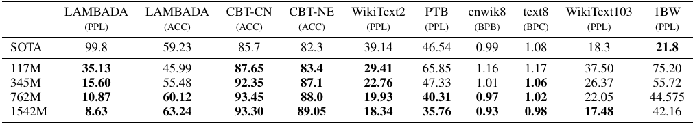
表 3： 多个数据集上的零样本结果。所有结果均未进行训练或微调。PTB 和 WikiText-2 结果来自 Gong 等人（2018）；CBT 结果来自 Bajgar 等人（2016）；LAMBADA 准确率来自 Hoang 等人（2018），困惑度来自 Grave 等人（2016）；其他结果来自 Dai 等人（2019）。
WebText 语言模型能够很好地跨领域和数据集迁移，在零样本设置下，于八个数据集中的七个刷新当前最佳水平。在 Penn Treebank 和 WikiText-2 这类只有 100 万到 200 万训练词元的小型数据集上，提升尤其明显。在 LAMBADA（Paperno 等，2016）和儿童图书测试（Hill 等，2015）这类旨在测量长期依赖的数据集上，提升也很显著。我们的模型在十亿词基准（Chelba 等，2013）上仍明显弱于此前工作。这可能是因为该数据集既是最大的一个，也采用了破坏性最强的预处理：它在句子级打乱数据，去除了全部长程结构。
3.2 儿童图书测试
儿童图书测试（CBT；Hill 等，2015）用于考察语言模型在不同词类上的表现，包括命名实体、名词、动词和介词。CBT 不以困惑度作为评价指标，而是在自动构造的完形填空测试上报告准确率；任务是从 10 个候选词中预测哪一个能正确填入被省略位置。按照原论文提出的语言模型方法，我们根据语言模型计算每个候选词以及以它为条件的句子其余部分的概率，并预测概率最高者。
如图 2 所示，性能随模型规模增大而稳定提升，并弥合了模型与人类在这项测试上的大部分差距。数据重叠分析表明，CBT 测试集中的一本书，Rudyard Kipling 的《丛林之书》，出现在 WebText 中；因此，我们报告验证集结果，该集合没有显著重叠。GPT-2 在普通名词和命名实体上分别达到 93.3% 和 89.1%，刷新当前最佳结果。我们还使用反分词器移除 CBT 中 Penn Treebank 风格的分词伪影。
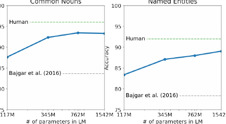
图 2： 儿童图书测试的表现与模型容量之间的关系。人类表现采用 Bajgar 等人（2016）的结果，而不是原论文中低得多的估计。
3.3 LAMBADA
LAMBADA 数据集（Paperno 等，2016）用于测试系统对文本长程依赖建模的能力。任务要求预测句子的最后一个词；人类至少需要 50 个词元的上下文才能成功预测。GPT-2 把当前最佳困惑度从 99.8（Grave 等，2016）改善至 8.6，并把语言模型在该测试上的准确率从 19%（Dehghani 等，2018）提高到 52.66%。
分析 GPT-2 的错误发现，大多数预测都是句子的有效后续，却不能作为句末词。这表明语言模型没有利用“目标词必须是句子最后一个词”这一额外且有用的约束。加入停用词过滤器近似利用该约束后，准确率进一步提高到 63.24%，比该任务的总体最佳水平高 4 个百分点。此前最佳方法（Hoang 等，2018）使用了另一种受限预测设置，把模型输出限制为上下文中出现过的词。对 GPT-2 来说，这一限制有害而无益，因为 19% 的答案并未出现在上下文中。我们使用未经预处理的数据集版本。
3.4 Winograd 模式挑战
Winograd 模式挑战（Levesque 等，2012）通过测试系统消解文本歧义的能力，衡量其执行常识推理的能力。Trinh 与 Le（2018）近期证明，语言模型可以为歧义的正确消解结果分配更高概率，从而在该挑战上取得显著进展。我们遵循他们的问题形式，并在图 3 中用完整评分和部分评分两种技术展示模型表现。GPT-2 把当前最佳准确率提升 7 个百分点，达到 70.70%。该数据集很小，只有 273 个样例，因此我们建议阅读 Trichelair 等人（2018）的研究，以便正确理解这一结果的背景。
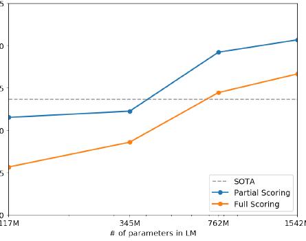
图 3： Winograd 模式挑战的表现与模型容量之间的关系。
3.5 阅读理解
对话式问答数据集 CoQA（Reddy 等，2018）包含来自七个不同领域的文档，每篇文档都配有提问者与回答者围绕文档展开的自然语言对话。CoQA 同时测试阅读理解能力，以及模型回答依赖对话历史问题的能力，例如回答“为什么？”。
把文档、相关对话历史和最后一个词元 A: 作为条件，对 GPT-2 使用贪心解码，在开发集上取得 55 F1。在没有使用 127,000 多个人工收集的问题--答案对的情况下，这一结果达到或超过四个基线系统中的三个，而这些基线都使用了这些样例训练。基于 BERT 的监督式当前最佳系统（Devlin 等，2018）已经接近人类的 89 F1。尽管 GPT-2 作为完全未接受监督训练的系统取得了令人振奋的表现，但检查其答案与错误可见，它经常使用简单的基于检索的启发式方法，例如面对“谁”类问题时，从文档中选取一个人名作答。
3.6 摘要生成
我们在 CNN 与 Daily Mail 数据集（Nallapati 等，2016）上测试 GPT-2 的摘要生成能力。为了诱导摘要行为，我们在文章末尾添加文本 TL;DR:，随后使用 $k=2$ 的 Top-k 随机采样（Fan 等，2018）生成 100 个词元。这样既能减少重复，又比贪心解码更鼓励抽象式摘要。我们取这 100 个词元中生成的前三个句子作为摘要。
从定性角度看，生成文本与摘要相似；但如表 14 所示，它们常常关注文章靠后的内容，或者混淆具体细节，例如车祸涉及多少辆汽车、徽标究竟在帽子还是衬衫上。在常用的 ROUGE-1、ROUGE-2 和 ROUGE-L 指标上，生成摘要仅开始接近经典神经基线，而且只略微超过从文章随机选取三个句子的结果。去除任务提示后，GPT-2 的综合指标下降 6.4 分，这表明自然语言能够调用语言模型中的任务专用行为。
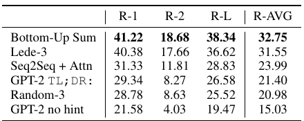
表 4： CNN 与 Daily Mail 数据集上以 ROUGE F1 衡量的摘要生成表现。Bottom-Up Sum 是 Gehrmann 等人（2018）的当前最佳模型。
3.7 翻译
我们测试 GPT-2 是否已经开始学习语言之间的翻译。为了帮助它推断目标任务，我们给语言模型提供若干“英文句子 = 法文句子”形式的示例对作为上下文；最后输入“英文句子 =”提示，采用贪心解码从模型采样，并把生成的第一个句子作为译文。
在 WMT-14 英译法测试集上，GPT-2 得到 5 BLEU，略差于先前无监督词翻译研究中利用双语词典逐词替换的方法（Conneau 等，2017b）。在 WMT-14 法译英测试集上，GPT-2 能利用自身非常强的英语语言模型，取得明显更好的 11.5 BLEU。这超过 Artetxe 等人（2017）和 Lample 等人（2017）的多个无监督机器翻译基线，但仍远低于当前最佳无监督机器翻译方法的 33.5 BLEU（Artetxe 等，2019）。
这项任务的表现令我们意外，因为筛选 WebText 时，我们刻意删除了非英语网页。为确认这一点，我们使用字节级语言检测器2 检查 WebText，只检测到 10 MB 法语数据；这比以往无监督机器翻译研究常用的单语法语语料小约 500 倍。
3.8 问答
一种检验语言模型包含何种信息的可能方法，是评估它生成事实型问题正确答案的频率。此前对神经系统这种行为的展示，例如把所有信息都存储在参数中的《神经对话模型》（Vinyals 与 Le，2015），由于缺少高质量评价数据集，只报告了定性结果。近期推出的 Natural Questions 数据集（Kwiatkowski 等，2019）为更定量地测试这一能力提供了很有希望的资源。
与翻译类似，我们在语言模型的上下文中放入问题--答案示例对，帮助模型推断该数据集所要求的简短答案风格。使用阅读理解数据集常用的精确匹配指标评估时，GPT-2 正确回答了 4.1% 的问题，例如 SQuAD 所采用的评价方式。3 作为对比，最小模型未能超过一个极其简单的基线：针对每种问题类型，例如“谁”“什么”“哪里”，一律返回最常见答案；该基线准确率为 1.0%。GPT-2 正确回答的问题数量是它的 5.3 倍，这表明模型容量一直是神经系统此前在这类任务上表现不佳的一个主要因素。
GPT-2 为生成答案分配的概率校准良好：在它最有信心的 1% 问题上，准确率达到 63.1%。开发集上，GPT-2 生成的 30 个最高置信答案见表 5。即便如此，GPT-2 的表现仍然远远低于开放域问答系统 30% 到 50% 的准确率区间；这类系统把信息检索与抽取式文档问答结合起来（Alberti 等，2019）。
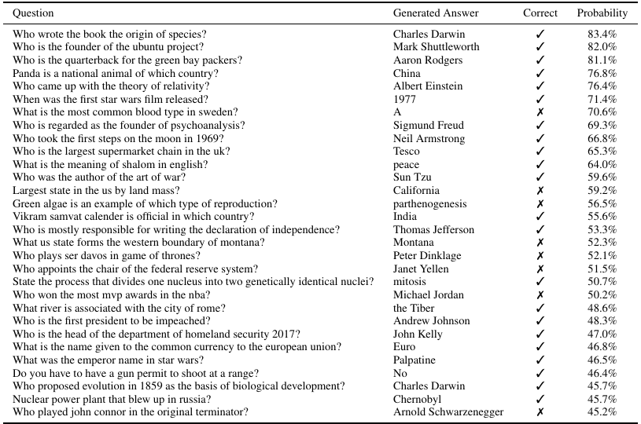
表 5： GPT-2 在 Natural Questions 开发集上生成的 30 个最高置信答案，按 GPT-2 赋予的概率排序。按照第 4 节所述程序，这些问题都没有出现在 WebText 中。
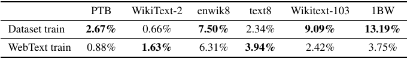
表 6： 测试集八元组与训练集重叠的比例。
4. 泛化与记忆
近期计算机视觉研究表明，常用图像数据集包含数量不可忽视的近重复图像。例如，CIFAR-10 的训练图像与测试图像有 3.3% 重叠（Barz 与 Denzler，2019），这会导致机器学习系统的泛化性能被高估。随着数据集规模增大，这类问题发生的可能性也随之上升，说明 WebText 中也可能存在类似现象。因此，分析测试数据有多少也出现在训练数据中十分重要。
为研究这一问题，我们创建了包含 WebText 训练集词元八元组的布隆过滤器。为了提高召回率，字符串被规范化为仅包含小写字母数字词，并以单个空格作为分隔符。我们构造布隆过滤器，使误报率上界为 $10^{-8}$。此外还生成了 100 万个字符串验证低误报率，过滤器没有错误地命中其中任何一个。
给定一个数据集，这些布隆过滤器可以计算其中有多少八元组也出现在 WebText 训练集中。表 6 展示了常用语言模型基准测试集的重叠分析。常用语言模型数据集的测试集与 WebText 训练集有 1% 到 6% 的重叠，平均为 3.2%。有些令人意外的是，许多数据集与自身训练划分的重叠更大，平均达到 5.9%。
我们的方法以召回率为优先。人工检查重叠内容时，虽然发现许多常用短语，但也发现了由重复数据造成的较长匹配。这并非 WebText 特有的问题。例如，我们发现 WikiText-103 测试集中的一篇文章也在训练数据集中；测试集一共只有 60 篇文章，因此重叠至少为 1.6%。4 更值得担忧的是，按照我们的程序，十亿词基准与自身训练集的重叠接近 13.2%。
在 Winograd 模式挑战中，只有 10 个模式与 WebText 训练集存在任何八元组重叠。其中 2 个是假匹配；余下 8 个中，只有 1 个模式出现在会泄露答案的上下文里。
在 CoQA 中，新闻领域约有 15% 的文档已经出现在 WebText 里，模型在这些文档上的 F1 高约 3 分。CoQA 开发集指标报告五个不同领域上的平均表现；我们测得各领域重叠为总体结果带来约 0.5 到 1.0 F1 的提升。不过，WebText 中并没有实际训练问题或答案，因为 CoQA 的发布日期晚于 WebText 链接的截止日期。
在 LAMBADA 上，平均重叠为 1.2%。在重叠超过 15% 的样例上，GPT-2 的困惑度约低 2。排除所有存在任何重叠的样例后重新计算，困惑度从 8.6 变为 8.7，准确率从 63.2% 降至 62.9%。总体结果变化很小，很可能是因为只有约两百个样例中才有一个存在显著重叠。
总体而言，分析表明 WebText 训练数据与特定评测数据集的重叠，会为报告结果带来幅度很小但稳定存在的收益。不过，如表 6 所示，对于大多数数据集，我们没有观察到明显超过标准训练集与测试集之间既有重叠的情况。
理解和量化高度相似文本对性能的影响，是一个重要研究问题。可扩展模糊匹配等更好的去重技术，也有助于更好地回答这些问题。目前，我们建议把基于 $n$ 元组重叠的去重作为一项重要验证步骤和基本合理性检查，用于创建新自然语言处理数据集的训练划分与测试划分。
判断 WebText 语言模型表现是否源于记忆的另一种方法，是检查它在自身留出集上的表现。如图 4 所示，模型在 WebText 训练集和测试集上的表现相近，而且都随模型规模增加而同步改善。这说明，即使 GPT-2 在很多方面仍然欠拟合 WebText。
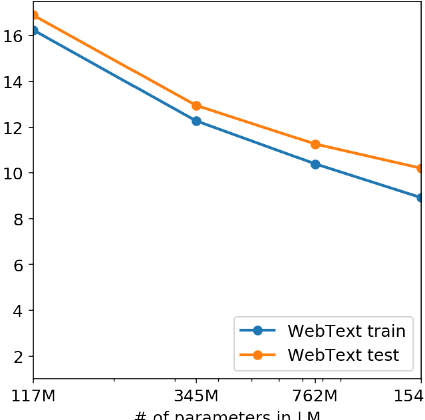
图 4： 在 WebText 上训练的语言模型，其表现与模型规模之间的关系。
GPT-2 还能够撰写一篇关于发现会说话的独角兽的新闻文章。表 13 给出了一个例子。
5. 相关工作
本文有相当一部分工作是测量在更大数据集上训练的更大语言模型之表现。这与 Jozefowicz 等人（2016）的工作相似，后者在十亿词基准上扩展了基于循环神经网络的语言模型。Bajgar 等人（2016）也曾利用古登堡计划创建一个大得多的训练数据集，以补充标准训练集，从而改进儿童图书测试的结果。Hestness 等人（2017）全面分析了多种深度学习模型的表现如何随模型容量和数据集规模变化。我们的实验跨任务噪声更大，但表明相似趋势同样适用于一个目标中的子任务，并且能够延续到参数超过 10 亿的规模。
此前已有研究记录生成模型学到的有趣功能，例如循环神经网络语言模型中的某些单元会跟踪行宽并检测引号或注释（Karpathy 等，2015）。对我们启发更大的是 Liu 等人（2018）的观察：一个为生成维基百科文章而训练的模型，也学会了在不同语言之间翻译名称。
此前工作还探索过筛选并构建大型网页文本语料的其他方法，例如 iWeb 语料库（Davies，2018）。
语言任务的预训练方法已经得到广泛研究。除引言中提到的方法外，GloVe（Pennington 等，2014）把词向量表示学习扩展到整个 Common Crawl。Skip-thought Vectors（Kiros 等，2015）是深度文本表示学习的一项早期且有影响力的工作。McCann 等人（2017）探索了使用机器翻译模型得到的表示；Howard 与 Ruder（2018）则改进了基于循环神经网络的微调方法。Conneau 等人（2017a）研究了从自然语言推理模型学到的表示之迁移表现，Subramanian 等人（2018）探索了大规模多任务训练。
Ramachandran 等人（2016）证明，当序列到序列模型的编码器和解码器都使用预训练语言模型初始化时，模型可以获益。较新的工作还表明，语言模型预训练有助于微调聊天对话和基于对话的问答系统等困难生成任务（Wolf 等，2019；Dinan 等，2018）。
6. 讨论
大量研究致力于学习（Hill 等，2016）、理解（Levy 与 Goldberg，2014）以及批判性评价（Wieting 与 Kiela，2019）监督与无监督预训练方法所产生的表示。我们的结果表明，无监督任务学习是另一个值得探索、很有希望的研究方向。这些发现还可能有助于解释预训练技术在下游自然语言处理任务上的广泛成功，因为我们证明：当规模趋向更大时，这类预训练技术之一会开始直接学习执行任务，而无须监督式适配或修改。
在零样本设置下，GPT-2 的阅读理解表现能够与监督式基线竞争。不过，在摘要生成等其他任务上，虽然定性结果表明它确实在执行任务，但按定量指标衡量，其能力仍很初步。这一结果在研究上颇具启发性，但就实际应用而言，GPT-2 的零样本表现仍远未达到可用水平。
我们研究了 WebText 语言模型在许多经典自然语言处理任务上的零样本表现，但还有许多任务可以评测。无疑存在大量实际任务，GPT-2 的表现仍不优于随机猜测。即使在我们评测的问答和翻译等常见任务上，语言模型也只有在容量足够大时，才开始超过平凡基线。
零样本表现为 GPT-2 在多项任务上的潜在能力建立了基线，但微调后的上限在哪里，仍不明确。在一些任务上，GPT-2 的完全抽象式输出，与基于抽取式指针网络（Vinyals 等，2015）的输出明显不同；后者目前在许多问答与阅读理解数据集上处于最佳水平。鉴于微调 GPT 以往取得的成功，我们计划研究在 decaNLP 和 GLUE 等基准上微调 GPT-2；BERT（Devlin 等，2018）已经揭示了单向表示的低效率，目前尚不清楚 GPT-2 额外的训练数据和模型容量是否足以克服这种低效率。
7. 结论
当大型语言模型在规模足够大、内容足够多样的数据集上训练时，它能够在许多领域和数据集上表现良好。GPT-2 以零样本方式在八个受测语言建模数据集中的七个达到当前最佳水平。模型能在零样本设置下完成多种多样的任务，这表明：以最大化足够多样化文本语料似然为目标训练的高容量模型，会开始学习在无须显式监督的情况下执行数量惊人的任务。5
致谢
感谢所有撰写文本、分享链接并为 WebText 内容投赞成票的人。数以百万计的人参与创造了 GPT-2 的训练数据。也感谢所有帮助我们建设训练基础设施的 Google 员工，包括 Zak Stone、JS Riehl、Jonathan Hseu、Russell Power、Youlong Cheng、Noam Shazeer、Solomon Boulos、Michael Banfield、Aman Gupta、Daniel Sohn，以及其他许多人。最后，感谢 Jacob Steinhardt、Sam Bowman、Geoffrey Irving 和 Madison May 对论文草稿提出反馈。
参考文献
- Al-Rfou, R., Choe, D., Constant, N., Guo, M., and Jones, L.《使用更深层自注意力的字符级语言建模》。arXiv:1808.04444，2018。
- Alberti, C., Lee, K., and Collins, M.《Natural Questions 的 BERT 基线》。arXiv:1901.08634，2019。
- Alcorn, M. A., Li, Q., Gong, Z., Wang, C., Mai, L., Ku, W.-S., and Nguyen, A.《摆个姿势：熟悉物体的奇怪姿态很容易欺骗神经网络》。arXiv:1811.11553，2018。
- Amodei, D., Ananthanarayanan, S., Anubhai, R., Bai, J., Battenberg, E., Case, C., Casper, J., Catanzaro, B., Cheng, Q., Chen, G., et al.《深度语音 2：英语与普通话端到端语音识别》。国际机器学习会议，第 173--182 页，2016。
- Artetxe, M., Labaka, G., Agirre, E., and Cho, K.《无监督神经机器翻译》。arXiv:1710.11041，2017。
- Artetxe, M., Labaka, G., and Agirre, E.《一种有效的无监督机器翻译方法》。arXiv:1902.01313，2019。
- Ba, J. L., Kiros, J. R., and Hinton, G. E.《层归一化》。arXiv:1607.06450，2016。
- Bajgar, O., Kadlec, R., and Kleindienst, J.《拥抱数据丰裕：用于阅读理解的 BookTest 数据集》。arXiv:1610.00956，2016。
- Barz, B. and Denzler, J.《我们是在测试数据上训练吗？清除 CIFAR 中的近重复样本》。arXiv:1902.00423，2019。
- Bengio, Y., Ducharme, R., Vincent, P., and Jauvin, C.《神经概率语言模型》。《机器学习研究期刊》，3(Feb):1137--1155，2003。
- Bowman, S. R., Pavlick, E., Grave, E., Van Durme, B., Wang, A., Hula, J., Xia, P., Pappagari, R., McCoy, R. T., Patel, R., et al.《寻找 ELMo 的朋友：超越语言建模的句子级预训练》。arXiv:1812.10860，2018。
- Caruana, R.《多任务学习》。《机器学习》，28(1):41--75，1997。
- Chelba, C., Mikolov, T., Schuster, M., Ge, Q., Brants, T., Koehn, P., and Robinson, T.《用于衡量统计语言建模进展的十亿词基准》。arXiv:1312.3005，2013。
- Collobert, R., Weston, J., Bottou, L., Karlen, M., Kavukcuoglu, K., and Kuksa, P.《几乎从零开始的自然语言处理》。《机器学习研究期刊》，12(Aug):2493--2537，2011。
- Conneau, A., Kiela, D., Schwenk, H., Barrault, L., and Bordes, A.《从自然语言推理数据监督学习通用句子表示》。arXiv:1705.02364，2017a。
- Conneau, A., Lample, G., Ranzato, M., Denoyer, L., and Jégou, H.《没有平行数据的词翻译》。arXiv:1710.04087，2017b。
- Dai, A. M. and Le, Q. V.《半监督序列学习》。神经信息处理系统进展，第 3079--3087 页，2015。
- Dai, Z., Yang, Z., Yang, Y., Cohen, W. W., Carbonell, J., Le, Q. V., and Salakhutdinov, R.《Transformer-XL：超越固定长度上下文的注意力语言模型》。arXiv:1901.02860，2019。
- Davies, M.《140 亿词的 iWeb 语料库》。https://corpus.byu.edu/iWeb/，2018。
- Dehghani, M., Gouws, S., Vinyals, O., Uszkoreit, J., and Kaiser, Ł.《通用 Transformer》。arXiv:1807.03819，2018。
- Devlin, J., Chang, M.-W., Lee, K., and Toutanova, K.《BERT：面向语言理解的深度双向变换器预训练》。arXiv:1810.04805，2018。
- Dinan, E., Roller, S., Shuster, K., Fan, A., Auli, M., and Weston, J.《维基百科向导：知识驱动的对话智能体》。arXiv:1811.01241，2018。
- Fan, A., Lewis, M., and Dauphin, Y.《分层神经故事生成》。arXiv:1805.04833，2018。
- Finn, C., Abbeel, P., and Levine, S.《面向深度网络快速适配的模型无关元学习》。arXiv:1703.03400，2017。
- Gehrmann, S., Deng, Y., and Rush, A. M.《自底向上的抽象式摘要》。arXiv:1808.10792，2018。
- Gillick, D., Brunk, C., Vinyals, O., and Subramanya, A.《从字节出发的多语言处理》。arXiv:1512.00103，2015。
- Gong, C., He, D., Tan, X., Qin, T., Wang, L., and Liu, T.-Y.《FRAGE：频率无关的词表示》。神经信息处理系统进展，第 1341--1352 页，2018。
- Grave, E., Joulin, A., and Usunier, N.《使用连续缓存改进神经语言模型》。arXiv:1612.04426，2016。
- He, K., Zhang, X., Ren, S., and Sun, J.《深度残差网络中的恒等映射》。欧洲计算机视觉会议，第 630--645 页，Springer，2016。
- Hestness, J., Narang, S., Ardalani, N., Diamos, G., Jun, H., Kianinejad, H., Patwary, M., Ali, M., Yang, Y., and Zhou, Y.《深度学习的规模规律在经验上是可预测的》。arXiv:1712.00409，2017。
- Hill, F., Bordes, A., Chopra, S., and Weston, J.《适度原则：使用显式记忆表示阅读儿童图书》。arXiv:1511.02301，2015。
- Hill, F., Cho, K., and Korhonen, A.《从无标注数据学习句子的分布式表示》。arXiv:1602.03483，2016。
- Hoang, L., Wiseman, S., and Rush, A. M.《实体跟踪改进完形填空式阅读理解》。arXiv:1810.02891，2018。
- Howard, J. and Ruder, S.《面向文本分类的通用语言模型微调》。计算语言学协会第 56 届年会论文集，第 1 卷，第 328--339 页，2018。
- Jelinek, F. and Mercer, R. L.《从稀疏数据插值估计马尔可夫源参数》。实践中的模式识别研讨会论文集，阿姆斯特丹：North-Holland，1980 年 5 月。
- Jia, R. and Liang, P.《用于评估阅读理解系统的对抗样例》。arXiv:1707.07328，2017。
- Jozefowicz, R., Vinyals, O., Schuster, M., Shazeer, N., and Wu, Y.《探索语言建模的极限》。arXiv:1602.02410，2016。
- Kaiser, L., Gomez, A. N., Shazeer, N., Vaswani, A., Parmar, N., Jones, L., and Uszkoreit, J.《用一个模型学习所有任务》。arXiv:1706.05137，2017。
- Karpathy, A., Johnson, J., and Fei-Fei, L.《循环网络的可视化与理解》。arXiv:1506.02078，2015。
- Kirkpatrick, J., Pascanu, R., Rabinowitz, N., Veness, J., Desjardins, G., Rusu, A. A., Milan, K., Quan, J., Ramalho, T., Grabska-Barwinska, A., et al.《克服神经网络中的灾难性遗忘》。《美国国家科学院院刊》，第 201611835 页，2017。
- Kiros, R., Zhu, Y., Salakhutdinov, R. R., Zemel, R., Urtasun, R., Torralba, A., and Fidler, S.《跳跃思维向量》。神经信息处理系统进展，第 3294--3302 页，2015。
- Krizhevsky, A., Sutskever, I., and Hinton, G. E.《使用深度卷积神经网络进行 ImageNet 分类》。神经信息处理系统进展，第 1097--1105 页，2012。
- Kwiatkowski, T., Palomaki, J., Rhinehart, O., Collins, M., Parikh, A., Alberti, C., Epstein, D., Polosukhin, I., Kelcey, M., Devlin, J., et al.《Natural Questions：问答研究基准》。2019。
- Lake, B. M., Ullman, T. D., Tenenbaum, J. B., and Gershman, S. J.《构建像人一样学习和思考的机器》。《行为与脑科学》，40，2017。
- Lample, G., Conneau, A., Denoyer, L., and Ranzato, M.《仅使用单语语料的无监督机器翻译》。arXiv:1711.00043，2017。
- Levesque, H., Davis, E., and Morgenstern, L.《Winograd 模式挑战》。第十三届知识表示与推理原理国际会议，2012。
- Levy, O. and Goldberg, Y.《神经词嵌入即隐式矩阵分解》。神经信息处理系统进展，第 2177--2185 页，2014。
- Liu, P. J., Saleh, M., Pot, E., Goodrich, B., Sepassi, R., Kaiser, L., and Shazeer, N.《通过摘要长序列生成维基百科》。arXiv:1801.10198，2018。
- McCann, B., Bradbury, J., Xiong, C., and Socher, R.《翻译中学到的知识：上下文化词向量》。神经信息处理系统进展，第 6294--6305 页，2017。
- McCann, B., Keskar, N. S., Xiong, C., and Socher, R.《自然语言十项全能：把多任务学习表述为问答》。arXiv:1806.08730，2018。
- Merity, S., Xiong, C., Bradbury, J., and Socher, R.《指针哨兵混合模型》。arXiv:1609.07843，2016。
- Mikolov, T., Sutskever, I., Chen, K., Corrado, G. S., and Dean, J.《词和短语的分布式表示及其组合性》。神经信息处理系统进展，第 3111--3119 页，2013。
- Nallapati, R., Zhou, B., Gulcehre, C., Xiang, B., et al.《使用序列到序列循环神经网络及其扩展进行抽象式文本摘要》。arXiv:1602.06023，2016。
- Paperno, D., Kruszewski, G., Lazaridou, A., Pham, Q. N., Bernardi, R., Pezzelle, S., Baroni, M., Boleda, G., and Fernández, R.《LAMBADA 数据集：需要广泛篇章上下文的词预测》。arXiv:1606.06031，2016。
- Pennington, J., Socher, R., and Manning, C.《GloVe：词表示的全局向量》。2014 年自然语言处理经验方法会议论文集，第 1532--1543 页，2014。
- Peters, M. E. and Lecocq, D.《使用多样化特征集合进行内容提取》。第 22 届万维网国际会议论文集，第 89--90 页，ACM，2013。
- Peters, M. E., Neumann, M., Iyyer, M., Gardner, M., Clark, C., Lee, K., and Zettlemoyer, L.《深度上下文化词表示》。arXiv:1802.05365，2018。
- Radford, A., Jozefowicz, R., and Sutskever, I.《学习生成评论并发现情感》。arXiv:1704.01444，2017。
- Radford, A., Narasimhan, K., Salimans, T., and Sutskever, I.《通过生成式预训练改进语言理解》。2018。
- Ramachandran, P., Liu, P. J., and Le, Q. V.《序列到序列学习的无监督预训练》。arXiv:1611.02683，2016。
- Recht, B., Roelofs, R., Schmidt, L., and Shankar, V.《CIFAR-10 分类器能泛化到 CIFAR-10 吗？》。arXiv:1806.00451，2018。
- Reddy, S., Chen, D., and Manning, C. D.《CoQA：对话式问答挑战》。arXiv:1808.07042，2018。
- Schwartz, R., Sap, M., Konstas, I., Zilles, L., Choi, Y., and Smith, N. A.《故事完形任务：华盛顿大学自然语言处理系统》。第二届词汇、句子与篇章级语义模型连接研讨会论文集，第 52--55 页，2017。
- See, A., Liu, P. J., and Manning, C. D.《直达要点：使用指针生成网络进行摘要》。arXiv:1704.04368，2017。
- Sennrich, R., Haddow, B., and Birch, A.《使用子词单元进行罕见词神经机器翻译》。arXiv:1508.07909，2015。
- Subramanian, S., Trischler, A., Bengio, Y., and Pal, C. J.《通过大规模多任务学习获得通用分布式句子表示》。arXiv:1804.00079，2018。
- Sutskever, I., Vinyals, O., and Le, Q. V.《使用神经网络进行序列到序列学习》。神经信息处理系统进展，第 3104--3112 页，2014。
- Sutskever, I., Jozefowicz, R., Gregor, K., Rezende, D., Lillicrap, T., and Vinyals, O.《迈向有原则的无监督学习》。arXiv:1511.06440，2015。
- Trichelair, P., Emami, A., Cheung, J. C. K., Trischler, A., Suleman, K., and Diaz, F.《论自然语言理解中常识推理的评估》。arXiv:1811.01778，2018。
- Trinh, T. H. and Le, Q. V.《一种简单的常识推理方法》。arXiv:1806.02847，2018。
- Vaswani, A., Shazeer, N., Parmar, N., Uszkoreit, J., Jones, L., Gomez, A. N., Kaiser, Ł., and Polosukhin, I.《注意力机制就是一切》。神经信息处理系统进展，第 5998--6008 页，2017。
- Vinyals, O. and Le, Q.《神经对话模型》。arXiv:1506.05869，2015。
- Vinyals, O., Fortunato, M., and Jaitly, N.《指针网络》。神经信息处理系统进展，第 2692--2700 页，2015。
- Wang, A., Singh, A., Michael, J., Hill, F., Levy, O., and Bowman, S. R.《GLUE：自然语言理解的多任务基准与分析平台》。arXiv:1804.07461，2018。
- Weston, J. E.《基于对话的语言学习》。神经信息处理系统进展，第 829--837 页，2016。
- Wieting, J. and Kiela, D.《无需训练：探索用于句子分类的随机编码器》。arXiv:1901.10444，2019。
- Wolf, T., Sanh, V., Chaumond, J., and Delangue, C.《TransferTransfo：面向神经网络对话智能体的迁移学习方法》。arXiv:1901.08149，2019。
- Yogatama, D., d'Autume, C. d. M., Connor, J., Kocisky, T., Chrzanowski, M., Kong, L., Lazaridou, A., Ling, W., Yu, L., Dyer, C., et al.《通用语言智能的学习与评估》。arXiv:1901.11373，2019。
8. 附录 A：样例
8.1 模型容量
为补充图 4 所报告的更大语言模型在 WebText 上获得的困惑度提升，表 7 至表 11 并排展示了最小 WebText 语言模型与 GPT-2 对随机、未见过的 WebText 测试集文章所作的续写。
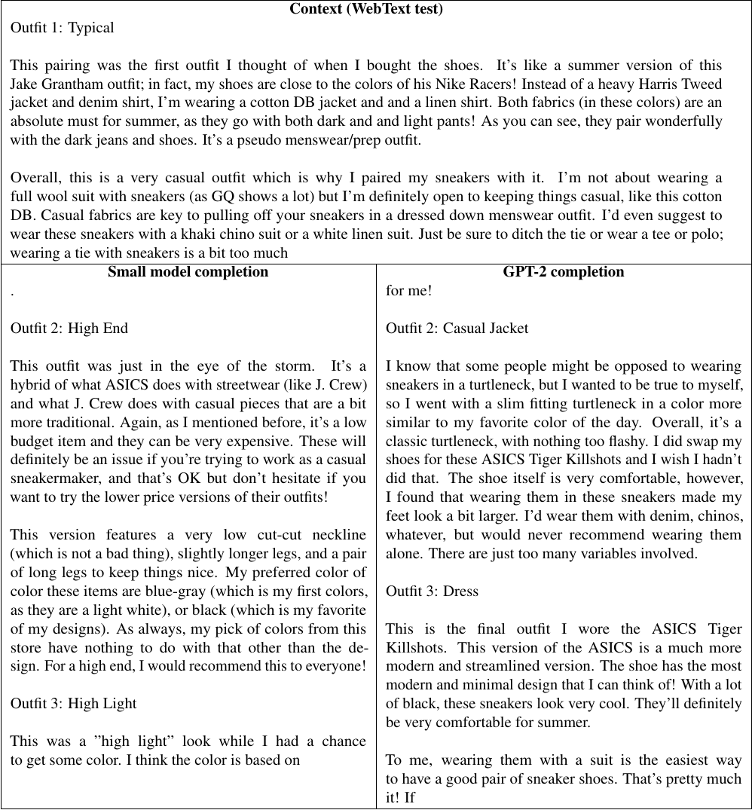
表 7： 顶部为随机、未见过的上下文；下方分别为最小模型（左）与最大模型（右）未经挑选的续写。上下文长 768 个词元，图中展示约 256 个词元的段落；续写长 256 个词元，全部展示。生成使用 $k=40$ 的 Top-k 随机采样。
表 8： 顶部为随机、未见过的上下文；下方分别为最小模型（左）与最大模型（右）未经挑选的续写。上下文长 768 个词元，图中展示约 256 个词元的段落；续写长 256 个词元，全部展示。生成使用 $k=40$ 的 Top-k 随机采样。
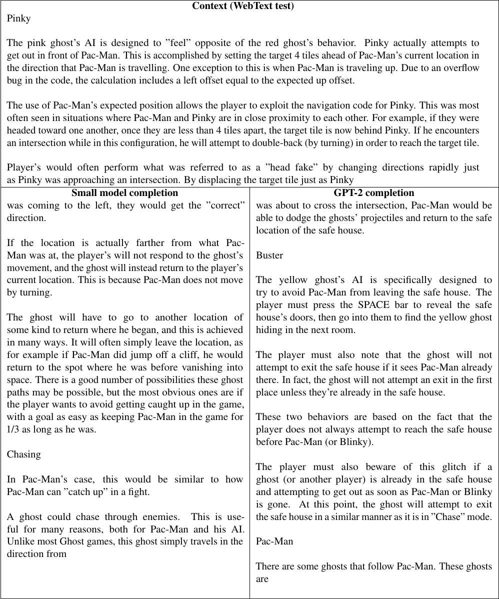
表 9： 顶部为随机、未见过的上下文；下方分别为最小模型（左）与最大模型（右）未经挑选的续写。上下文长 768 个词元，图中展示约 256 个词元的段落；续写长 256 个词元，全部展示。生成使用 $k=40$ 的 Top-k 随机采样。
表 10： 顶部为随机、未见过的上下文；下方分别为最小模型（左）与最大模型（右）未经挑选的续写。上下文长 768 个词元，图中展示约 256 个词元的段落；续写长 256 个词元，全部展示。生成使用 $k=40$ 的 Top-k 随机采样。
表 11： 顶部为随机、未见过的上下文；下方分别为最小模型（左）与最大模型（右）未经挑选的续写。上下文长 768 个词元，图中展示约 256 个词元的段落；续写长 256 个词元，全部展示。生成使用 $k=40$ 的 Top-k 随机采样。
8.2 文本记忆
我们观察到，GPT-2 会记忆数据集中多次重复的较长字符串，例如著名引语或演讲。举例而言，在以《葛底斯堡演说》的前一句半作为条件时，GPT-2 的最大概率解码能够复原这篇演说，而它在 WebText 中约出现了 40 次。即使采用不截断的采样，我们也发现模型会先复制演说一段时间，然后才开始偏离，不过偏离后的风格仍然相似。它通常会在 100 到 200 个词元内发生偏离，偏离后内容的多样性逐渐扩大。
为了量化样例中出现精确记忆的频率，我们以 WebText 测试集文章作为条件，让 GPT-2 生成样例，并把 GPT-2 生成内容的重叠率与真实续写的重叠率进行比较。分析结果见下图。它表明，GPT-2 重复训练集文本的频率，低于留出文章所体现的基线重复率。
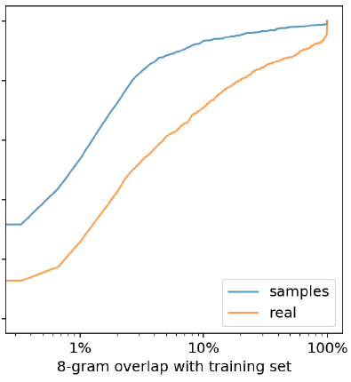
图 5： WebText 测试集和生成样例与 WebText 训练集之间八元组重叠比例的经验累积分布函数。生成样例以 WebText 测试集为条件，采用 $k=40$ 的 Top-k 截断随机采样。大多数样例的重叠低于 1%，其中超过 30% 完全没有重叠；相比之下，测试集的重叠中位数为 2.6%。
8.3 多样性
表 12 展示了对同一个随机 WebText 测试集上下文进行的多次续写，说明标准采样设置能够产生多样化的续写结果。
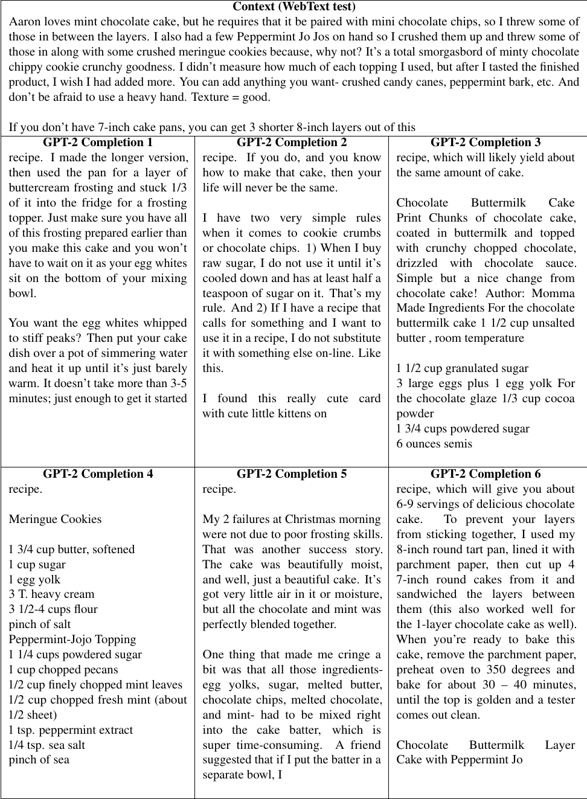
表 12： GPT-2 对同一个 WebText 测试集上下文生成的未经挑选续写。上下文长 384 个词元，图中截断显示；每段生成文本长 128 个词元。生成使用 $k=40$ 的 Top-k 随机采样。
8.4 鲁棒性
表 13 展示了前文提到的“会说话的独角兽”新闻文章。我们发现模型能够处理分布外上下文，但这些样例的质量通常较低。
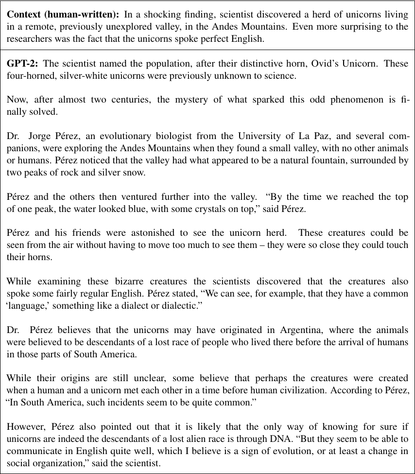
表 13： GPT-2 在分布外上下文上的条件生成。该样例是从使用 $k=40$ 生成的 10 个样例中挑选出的一个。
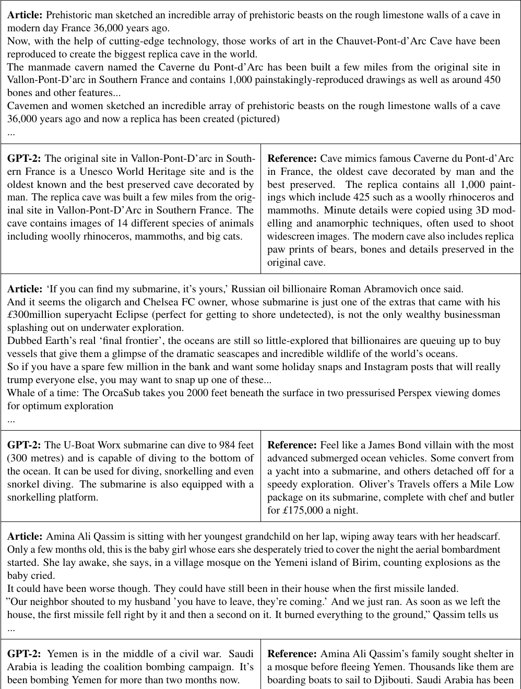
表 14： GPT-2 在 CNN 与 Daily Mail 测试集上生成的摘要，以及对应参考摘要。
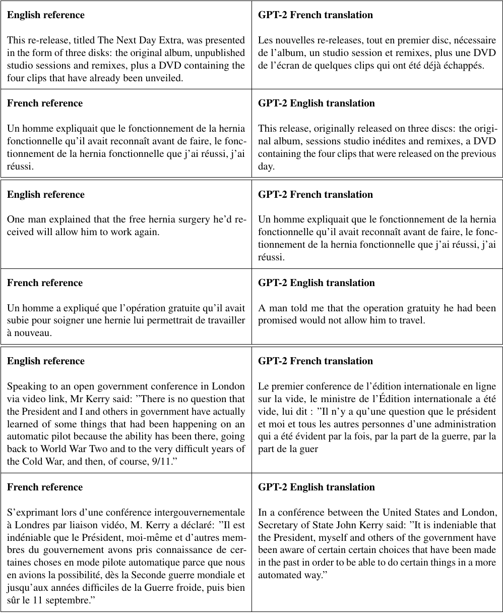
表 15： GPT-2 生成的英译法与法译英结果。
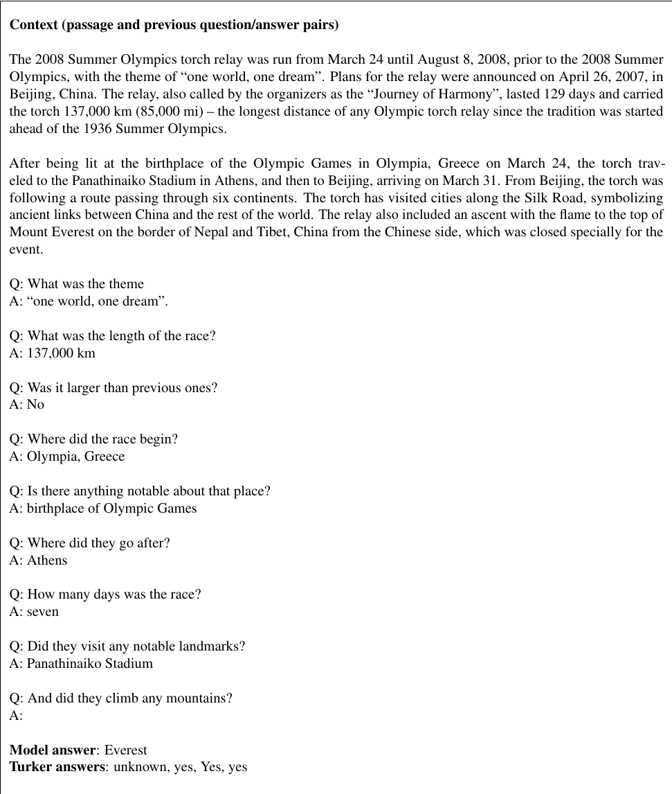
表 16： 选取的一项 CoQA 续写。
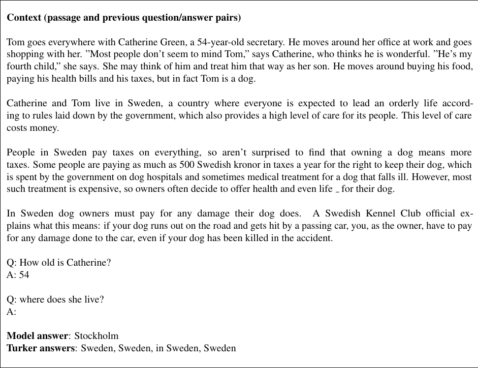
表 17： 选取的一项 CoQA 续写。
- Newspaper 内容提取器：https://github.com/codelucas/newspaper ↩
- CLD2 语言检测器：https://github.com/CLD2Owners/cld2 ↩
- Alec 原以为自己很擅长随机知识问答。在与 GPT-2 相同的设置下，他对随机抽取的 100 个样例作答，答对 17 个。实际上他只答对 14 个，但另外 3 个他认为自己本来应该答对。 ↩
- 额外重叠中有很大一部分来自编辑复用段落：他们会在共享同一主题的多篇文章中使用相同段落，例如有关朝鲜战争不同战役的文章。 ↩
- 下载并使用小型模型的初步代码见：https://github.com/openai/gpt-2 ↩